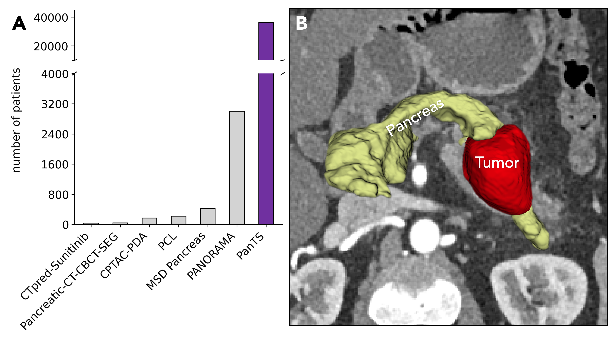
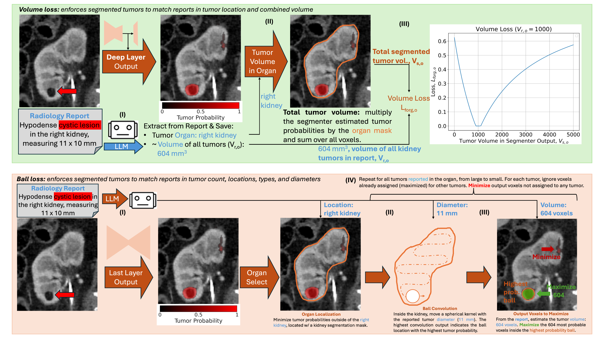
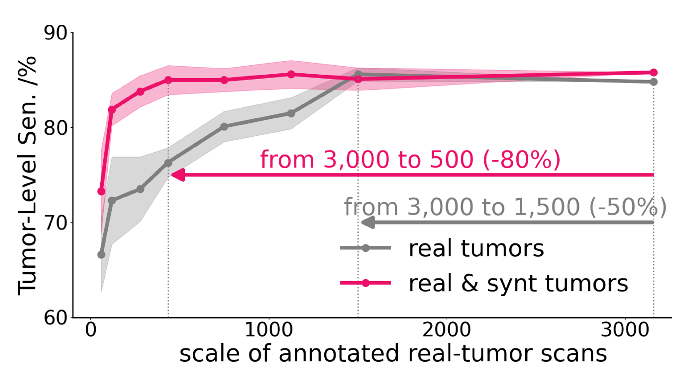
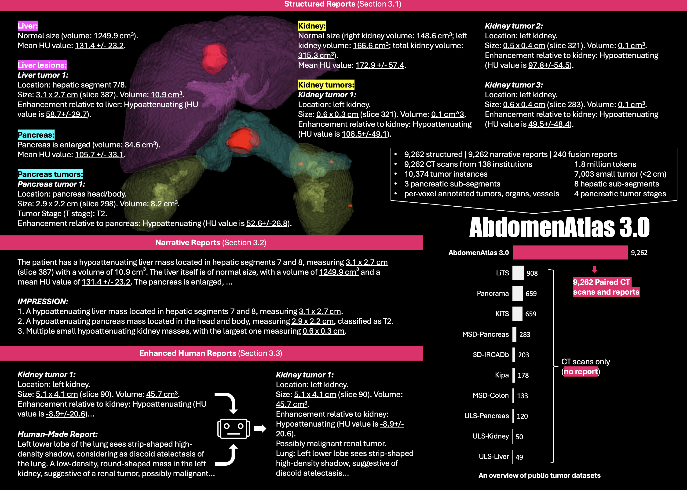
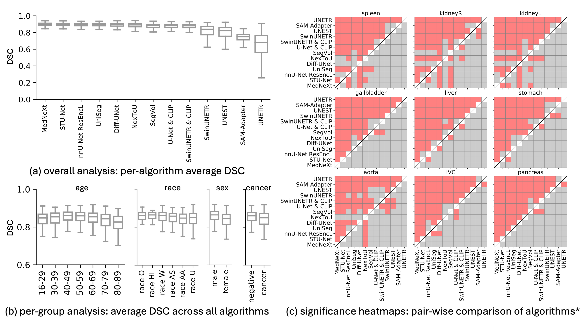
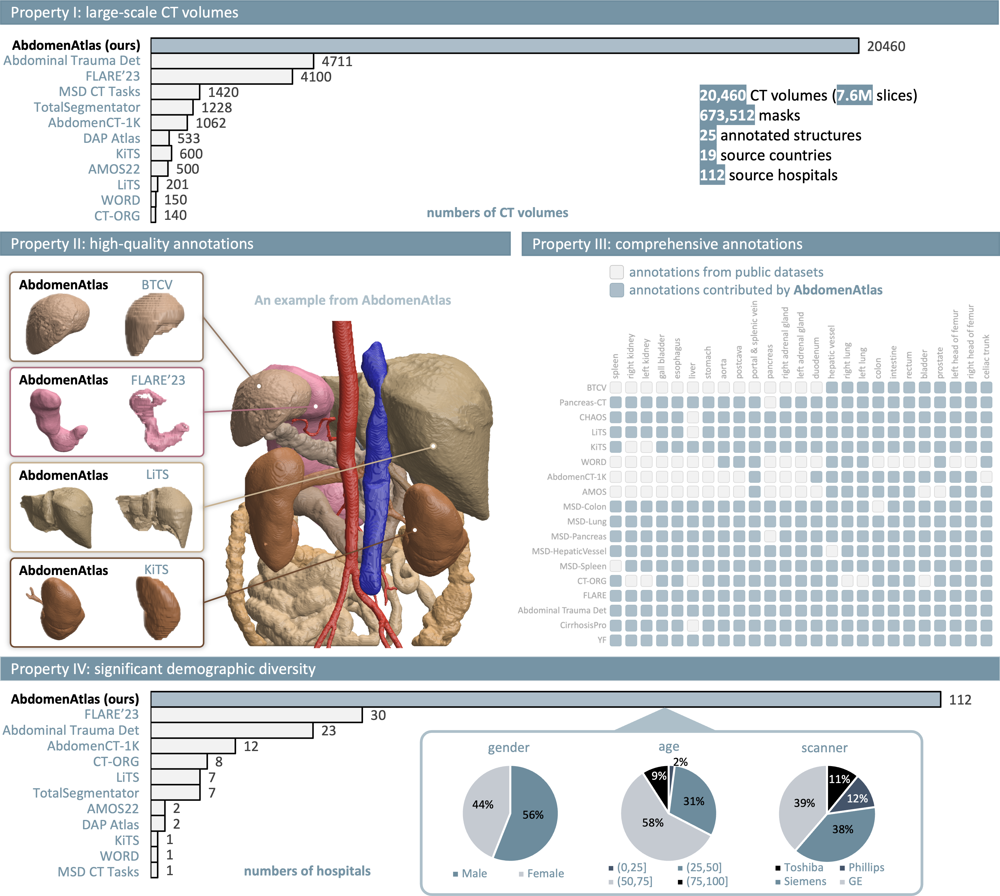
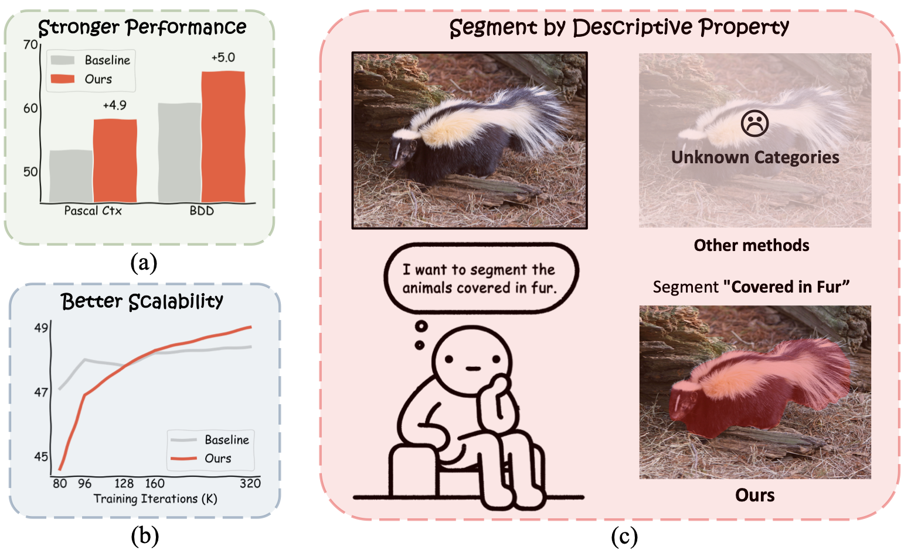
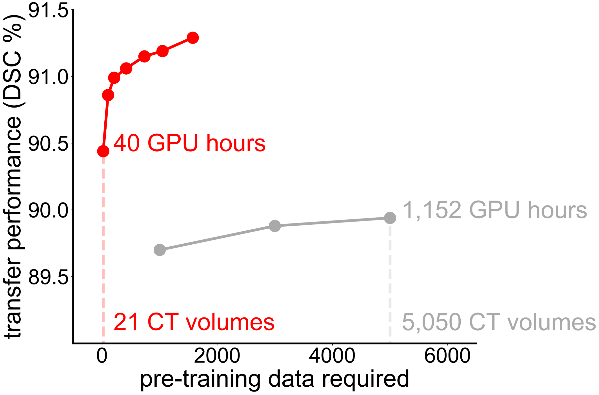

|
CVPR 2026 Outstanding Reviewer, 2026 (top 5% in 17,491 reviewers)
Third Place,
2026 Johns Hopkins Healthcare Design Competition,
2026 (9 out of 568)
Runner-up, MICCAI Best Paper Award, 2025 (2 out of 1027)
First Place, Medical Segmentation Decathlon (MSD) Competition, 2025
Finalist,
Whiting School of Engineering Trainee Award,
Johns Hopkins University, 2025
|
|

|
PanTS: The Pancreatic Tumor Segmentation Dataset
Wenxuan Li*,
Xinze Zhou*,
Qi Chen*,
Tianyu Lin,
Pedro R. A. S. Bassi,
Xiaoxi Chen,
Chen Ye,
Zheren Zhu,
Kai Ding,
Heng Li,
Kang Wang,
Yang Yang,
Yucheng Tang,
Daguang Xu,
Alan L. Yuille,
Zongwei Zhou
Conference on Neural Information Processing Systems (NeurIPS), 2025
3rd Place, Johns Hopkins Healthcare Design Competition'26
paper /
code /
data
A large-scale dataset and benchmark for pancreatic tumor segmentation.
* Equal contribution.
|
|

|
Learning Segmentation from Radiology Reports
Pedro R. A. S. Bassi,
Wenxuan Li,
Jieneng Chen,
Zheren Zhu,
Tianyu Lin,
Sergio Decherchi,
Andrea Cavalli,
Kang Wang,
Yang Yang,
Alan L. Yuille,
Zongwei Zhou
Medical Image Computing and Computer Assisted Intervention (MICCAI), 2025.
Runner-up, Best Paper Award (2 out of 1027)
paper /
code
Leverages free-text radiology reports as weak supervision to train accurate medical segmentation models.
|
|

|
Scaling Laws in Tumor Segmentation: Best Lessons from Real and Synthetic Data
Qi Chen,
Xinze Zhou,
Chen Liu,
Hao Chen,
Zekun Jiang,
Wenxuan Li,
Ziyan Huang,
Yuxuan Zhao,
Dexin Yu,
Junjun He,
Yefeng Zheng,
Ling Shao,
Alan L. Yuille,
Zongwei Zhou
International Conference on Computer Vision (ICCV), 2025
paper /
code
Investigates scaling behavior of tumor segmentation models with combined real and synthetic data.
|
|

|
RadGPT: Constructing 3D Image-Text Tumor Datasets
Pedro R. A. S. Bassi,
Mehmet Can Yavuz,
Kang Wang,
Xiaoxi Chen,
Wenxuan Li,
Sergio Decherchi,
Andrea Cavalli,
Yang Yang,
Alan L. Yuille,
Zongwei Zhou
International Conference on Computer Vision (ICCV), 2025
paper /
code /
data
Builds large-scale 3D image-text tumor datasets to power radiology language models.
|
|

|
Touchstone Benchmark: Are We on the Right Way for Evaluating AI Algorithms for Medical Segmentation?
Wenxuan Li*,
Pedro R. A. S. Bassi*,
Yucheng Tang,
Fabian Isensee,
Zifu Wang,
Jieneng Chen,
Yu-Cheng Chou,
Saikat Roy,
Yannick Kirchhoff,
Maximilian Rokuss,
Ziyan Huang,
Jin Ye,
Junjun He,
Tassilo Wald,
Constantin Ulrich,
Michael Baumgartner,
Klaus H. Maier-Hein,
Paul Jaeger,
et al.,
Alan L. Yuille,
Zongwei Zhou
Conference on Neural Information Processing Systems (NeurIPS), 2024
paper /
code
A rigorous, multi-institutional benchmark for medical image segmentation algorithms.
* Equal contribution. Authors are permitted to list their name first in their CVs.
|
|

|
AbdomenAtlas: A Large-Scale, Detailed-Annotated, & Multi-Domain Dataset for Efficient Transfer Learning and Open Algorithmic Benchmarking
Wenxuan Li,
Chongyu Qu,
Xiaoxi Chen,
Pedro R. A. S. Bassi,
Yijia Shi,
Yuxiang Lai,
Qian Yu,
Huimin Xue,
Yixiong Chen,
Xiaorui Lin,
Yutong Tang,
Yining Cao,
Haoqi Han,
Zheyuan Zhang,
Jiawei Liu,
Tiezheng Zhang,
Yujiu Ma,
Jincheng Wang,
Guang Zhang,
Alan L. Yuille,
Zongwei Zhou
Medical Image Analysis, 2024
paper /
code /
data
The largest publicly-released abdominal CT dataset for transfer learning and algorithm benchmarking.
|
|

|
A Semantic Space is Worth 256 Language Descriptions: Make Stronger Segmentation Models with Descriptive Properties
Junfei Xiao,
Ziqi Zhou,
Wenxuan Li,
Shiyi Lan,
Jieru Mei,
Zhiding Yu,
Bingchen Zhao,
Alan L. Yuille,
Yuyin Zhou,
Cihang Xie
European Conference on Computer Vision (ECCV), 2024
paper /
code
Strengthens segmentation models by enriching the semantic space with descriptive language properties.
|
|

|
How Well Do Supervised 3D Models Transfer to Medical Imaging Tasks?
Wenxuan Li,
Alan L. Yuille,
Zongwei Zhou
International Conference on Learning Representations (ICLR), 2024.
Oral (top 1.2%)
paper /
code /
data
Introduces AbdomenAtlas 1.1, one of the largest fully-annotated 3D CT datasets, and SuPreM, a suite of supervised pre-trained 3D models for medical image segmentation.
|
|
Workshop Organizer:
12th CVPR Workshop on Medical Computer Vision, CVPR'26
Challenge Organizer:
Body Maps: Towards 3D Atlas of Human Body, ISBI'24 & MICCAI'24
Challenge for Vision-Language Modeling in 3D Medical Imaging, MICCAI'25 & ICCV'25
Reviewer:
CVPR, MICCAI
|
|
Johns Hopkins Engineering Magazine:
Accelerating Pancreatic Cancer Detection, 2026
JHU WSE News:
Hold on to your PanTS—there's a new pancreatic cancer detection dataset in town, 2025
JHU CS News:
CCVL researchers to present 18 abstracts at RSNA 2025, 2025
JHU Malone Center News:
For AI tumor detection, a picture isn't always worth a thousand words, 2025
Johns Hopkins Engineering Magazine:
Gut Check, 2025
JHU News-Letter:
AbdomenAtlas: an AI-based approach for early cancer diagnosis, 2025
JHU CS News:
A touchstone of medical artificial intelligence, 2025
JHU News:
AI-Powered Map of the Abdomen Could Help Find Cancer Early On, 2025
JHU WSE News:
AI and Radiologists Unite to Map the Abdomen, 2024
|
|